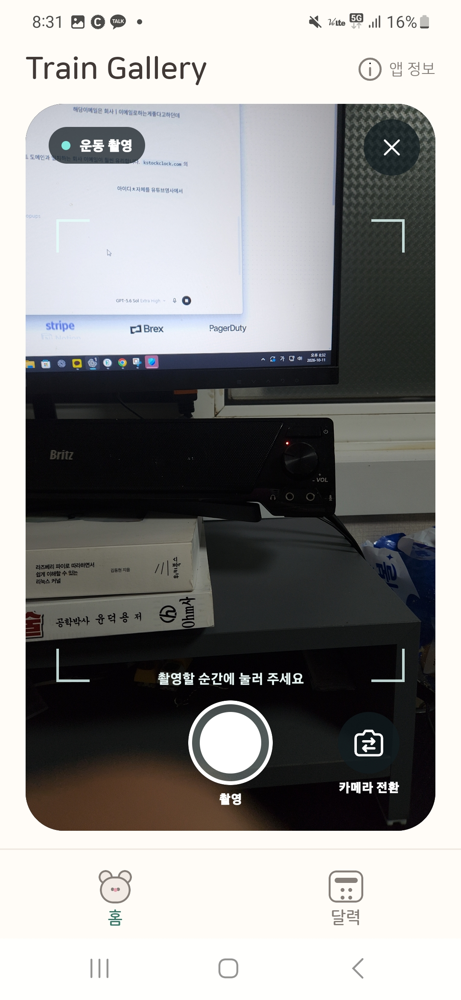
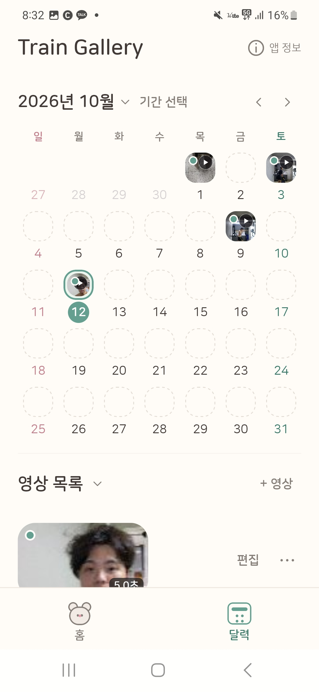
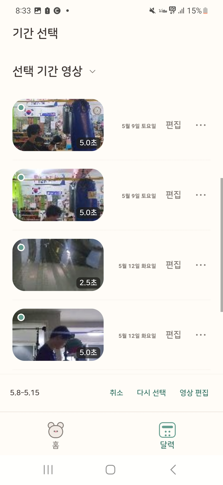
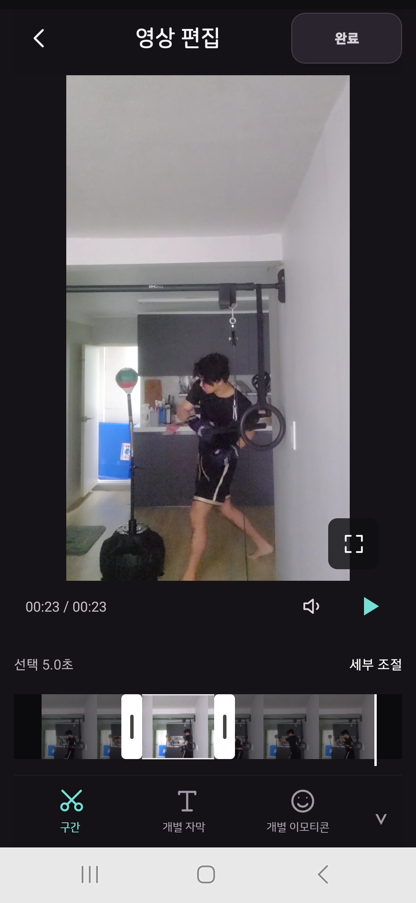
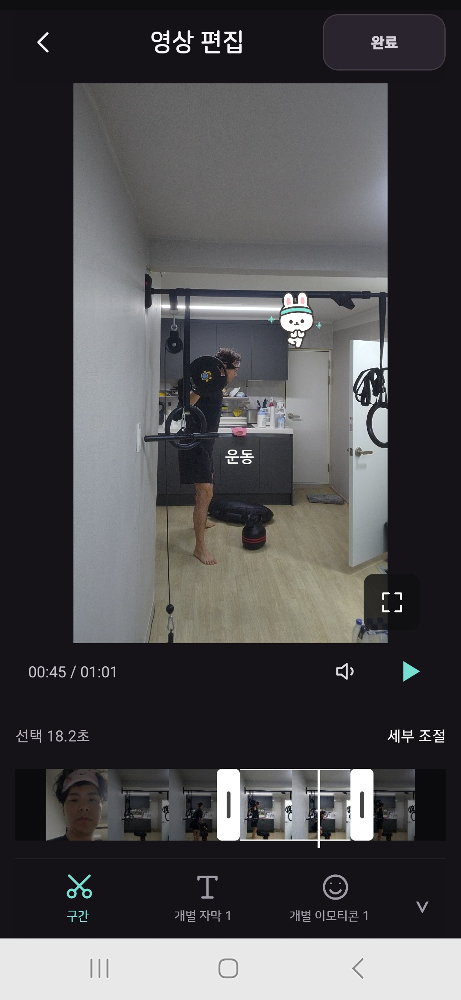

매일 찍은 운동 영상을 달력에 기록하고, 여러 영상을 하나의 브이로그로 만드는 모바일 앱입니다. 각 영상에서 쓸 구간을 고르고 자막·이모티콘을 붙여 운동 기록을 영상으로 남길 수 있습니다.
Train Gallery
프로젝트 소개
주요 기능
- 촬영·가져오기 — 앱에서 직접 촬영하거나 기존 영상을 날짜별 기록으로 저장
- 달력·기간 선택 — 날짜별 영상을 찾아보고 브이로그에 넣을 여러 영상을 선택
- 개별 영상 편집 — 영상마다 필요한 구간을 자르고 개별 자막·이모티콘 추가
- 브이로그 제작 — 선택한 영상을 이어 붙이고, 여러 영상에 공용 자막·이모티콘을 적용해 하나의 영상으로 저장
- 이어서 편집 — 자동 저장된 브이로그를 홈에서 다시 열어 편집 계속하기
실제 화면





